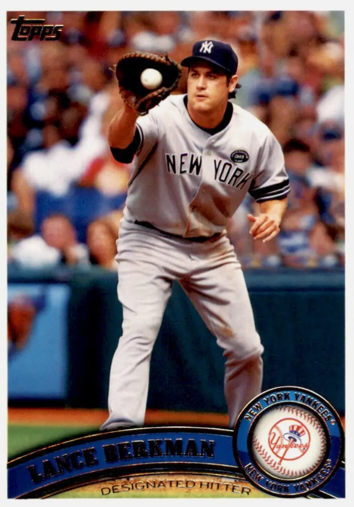

Lance Berkman "Big Puma"
Career Highlights & Facts
(Facts are AI-generated and may require verification)
- Named the 1997 National College Player of the Year after hitting 41 home runs with 134 RBI.
- Finished career with a 144 OPS+, tied for 38th all-time with Willie Mays and Mike Trout.
- Tied Game 6 of the 2011 World Series with a two-out, two-strike single in the 10th inning.
Would you like to find out more about Lance Berkman?
Career Totals
| WAR | AB | H | HR | BA | R | RBI | SB | OBP | SLG | OPS | OPS+ |
|---|---|---|---|---|---|---|---|---|---|---|---|
| 52.0 | 6491 | 1905 | 366 | .293 | 1146 | 1234 | 86 | .406 | .537 | .943 | 144 |
Statistics via Baseball-Reference.com
The Original Clue